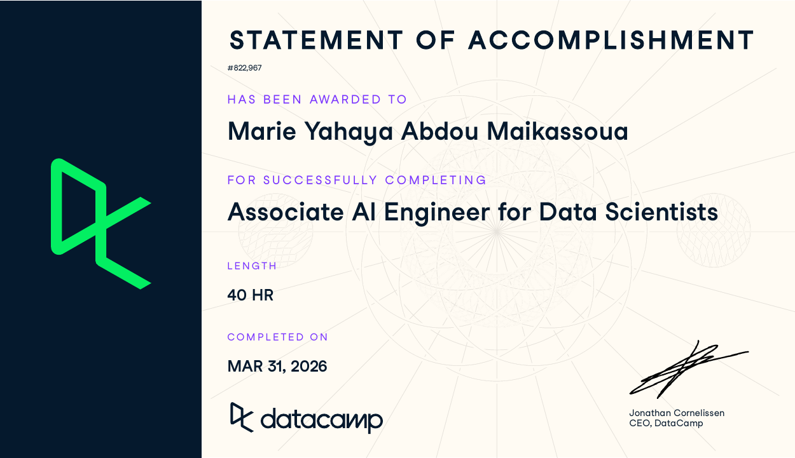
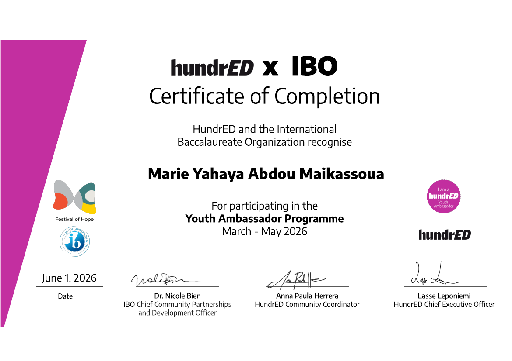
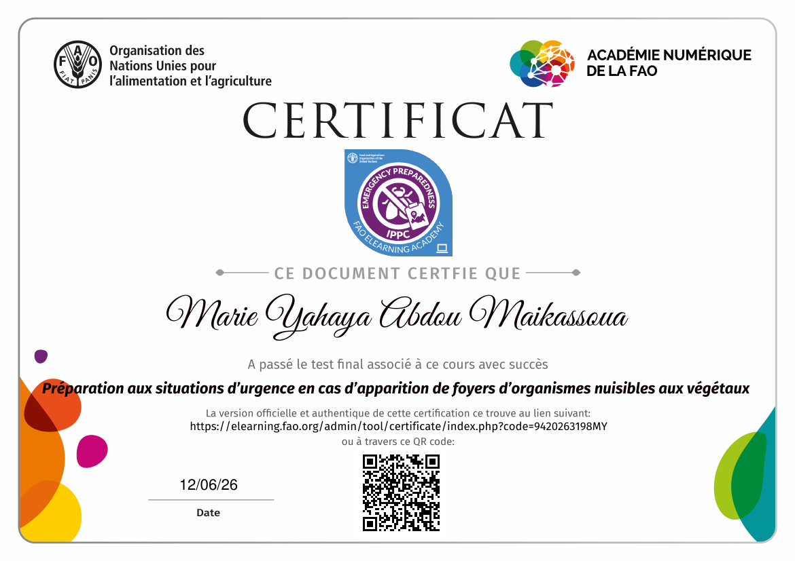
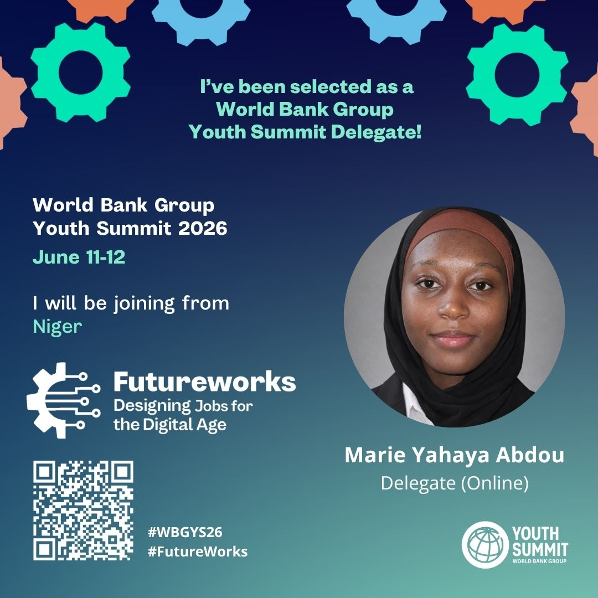

Associate AI Engineer for Data Scientists
40-hour certificate completed March 31, 2026.
14 / CREDENTIALS & EVIDENCE
A clean archive of diplomas, courses, certifications and formal evidence behind my learning journey. Originals are preserved here so the story is supported by proof, not only by claims.
CERTIFICATIONS & PROGRAMS
A growing archive of formal learning, technical training, international programs and participation records that support the wider portfolio.

40-hour certificate completed March 31, 2026.

Online course authorised by Saïd Business School, University of Oxford.

AWC Women and Girls Digital Tech Hub, AI & Data Science Program.

Certificate of completion for participating in the March–May 2026 programme.

Certificate of participation for the virtual event and hackathon.

Certificate from the FAO e-learning academy.

Selected as an online delegate for the World Bank Group Youth Summit 2026.
DIPLOMAS & ACADEMIC BACKGROUND
COURSES & CONTINUOUS LEARNING